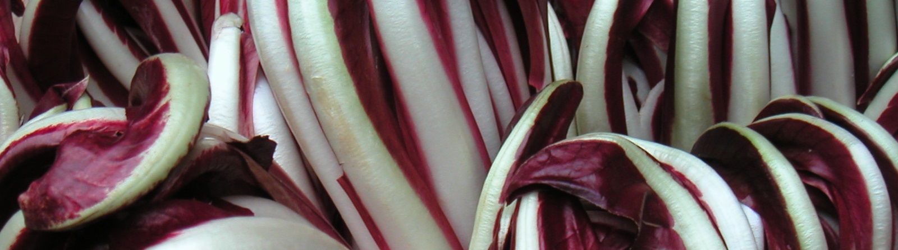
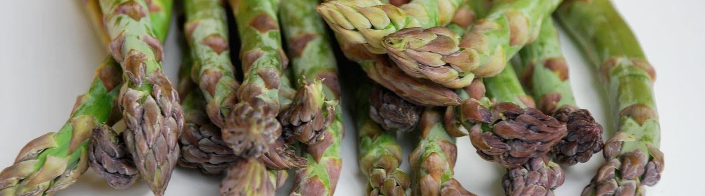

Eventi
Carnevale in Piazza

7 Febbraio 2015 - ore 14.30
Presso Piazza Umberto I - Zero Branco
22^Mostra del Radicchio Rosso di Treviso IGP 2015
Dal 09 al 18 Gennaio 2015
Presso la struttura di Via Taliercio
47^Sagra del Peperone 2014
Dal 29 agosto al 8 settembre 2014
Presso la struttura di Via Taliercio
18^Mostra dell'Asparago - 10^Festa di Primavera 2014
Dal 24 al 27 aprile 2014
Presso Piazza Umberto I - Zero Branco